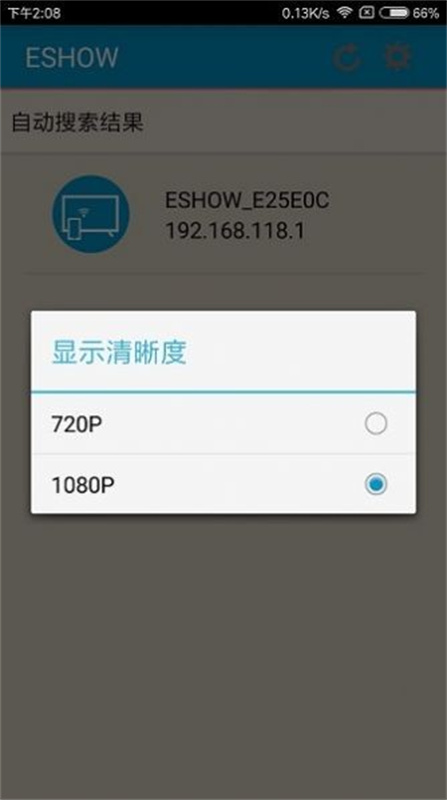

ESHOW 装了半年多——从"又要装 App"到会议室离不开的投屏工具
公司 AWIND 奇机接收端配的发送端 App，用了大半年才想起来聊聊感受。不是评测，是一个用户从抵触到习惯再到离不开的长期记录。
不是主动装的，是被迫用了半年多
半年前 IT 在会议室装了一台 AWIND 奇机的接收端盒子，然后群里发消息让安卓用户装个 ESHOW。我当时挺不耐烦——又来一个投屏 App？手机上已经有好几个了，小米投屏、华为多屏协同、甚至微信都能投，干嘛还要专门装一个？
但 IT 说只支持这个。于是不情愿地从eshow官网下载包了一份装上，权限只给了网络和存储，其他一律拒了。打开一看，界面干净，没有账号注册的弹窗，直接开始搜设备。搜到会议室那台奇机盒子，弹了个投屏码输入框，走到大屏跟前看清四个数字，输进去，画面出来了——就这么简单。

越用越顺手的：分工明确比什么都强
用了一段时间才发现，ESH OW 跟之前装过的那些投屏 App 思路完全不一样。
它只管发送。搜索接收端、建立连接、推送画面——这些是它的事。至于信号怎么处理、转换成什么格式、用 HDMI 还是 VGA 输出到大屏，那是奇机盒子的事。接收端硬件做了大头，手机这边反而轻松，推送延迟能压到 100ms 以内，PPT 翻页基本跟手，没出现过画面滞后半拍让人尴尬的情况。
这个分工设计还有个隐形好处——手机端资源占用低。之前装的某些投屏 App，投屏的时候后台还在跑个什么进程，电量哗啦啦往下掉。ESH OW 投屏时我专门看了一下，CPU 占用在个位数，基本不发热，投个半小时 PPT，手机电量掉不到 10%。
而且它真的不用注册账号。打开就能搜，搜到就输码，输完就投。没有"登录后解锁高级功能"的套路，没有"首次使用请填写手机号"的弹窗，连上即用即走。起初我还担心是不是哪天突然要强制登录，用了大半年也没见它提过账号的事，反倒是每次更新都干干净净直接覆盖，连个"欢迎回来"的启动页都没有。连获取安装包也简单，不想等 App 内检测的直接从eshow下载拿就行。

越用越烦的：安卓用户的额外烦恼
用着用着发现一个扎心的事实：会议室里 iPhone 同事根本不装这个。
奇机接收端原生兼容 Airplay。iPhone 用户从控制中心拉下来点一下"屏幕镜像"，直接就能搜到设备，输个投屏码完事。整个过程系统原生支持，不用装任何第三方 App，投屏体验跟我一模一样。
而我作为安卓用户，就得专门装一个 ESHOW。起初我觉得这是 AWIND 偏心，后来翻了一下eshow文档才明白——安卓没有统一的系统级镜像协议。小米有自己的投屏、华为有多屏协同、三星有 Smart View，各家实现都不一样。AWIND 选了自己做发送端来保证兼容性，所以安卓用户就得装这个 App。
说个反直觉的：虽然我嘴上抱怨多装了一个 App，但实际用下来 ESHOW 在安卓上反而比各家自带的投屏稳定。公司有个同事用某 O 品牌的手机，自带的投屏功能在某些会议室就搜不到奇机盒子，装了 ESHOW 之后秒搜。这就是专用工具的好处——它只做这一件事，反而做得比那些什么都想做一点的系统功能更靠谱。
还有个小烦恼：投屏码。每次投屏都得走到大屏跟前看清四个数字，回来输。起初我觉得烦——为什么不能直接扫大屏上的二维码？后来想想，二维码其实也有它的问题：大屏反光、二维码损坏、手机摄像头对焦慢，都可能卡壳。四个数字反而直观，走到跟前几秒钟的事。而且投屏码是每次启动自动生成的，不像固定密码泄露了就全完蛋。
成了每天离不开的：会议室标配不是白来的
现在 ESHOW 已经是我会议室演示的标配工具了，每周至少用三四次。
镜像投屏讲产品方案，音视频投屏放 demo 视频，偶尔用相机投实时画面做现场演示。每次都是搜设备 → 输码 → 选投法 → 开投，四步熟得闭着眼都能走完。公司里其他安卓同事也逐渐放弃了各自手机自带的投屏，统一用 ESHOW——毕竟 IT 推荐的方案，出了问题有人管，比自己瞎琢磨系统设置省事。
反而当初觉得最麻烦的点——"又要装 App 又要输码"——现在成了最放心的点。有一次隔壁组在同一网段开小会，他们没开投屏码校验，结果被路过的访客手机误投了屏，尴尬到不行。而我们这台因为每次都要输码，没出过这种状况。现在我甚至会主动提醒新来的同事：别让管理员关了投屏码，方便是方便，投错屏的代价太大了。
观感修正：半年前的几个判断被推翻了
当初高估的：我以为 ESHOW 会是一个高频更新的 App，每个月都来个新版本。实际上它更新频率低得很——半年多下来我才收到过一次更新提示，还是因为奇机接收端固件升级了。起初觉得迭代慢是功能不够丰富的表现，现在反觉得是成熟可靠的信号：该有的功能都有了，没必要瞎折腾。而且它不存任何个人数据，更新就是直接覆盖安装，连个备份都不需要，干净利落。
当初低估的：这种硬件+App 的分离架构。起初觉得为什么不整个一体方案？现在明白了，硬件做信号处理、App 做推送控制，各司其职反而更稳。如果信号处理全压在手机端，且不说发热耗电，不同机型的性能差异还会导致投屏体验参差不齐。现在手机只负责推送，真正重的活交给奇机盒子，投屏效果反而跟手机性能关系不大了。
会不会卸载？暂时不会
ESHOW 成了我办公流程里的固定一环了，卸载它等于主动给自己找麻烦。什么情况下我会考虑换掉它？
一是公司换了其他牌子的接收端——比如换成支持 Miracast 全兼容的，或者干脆换成 USB 按键方案（那个连 App 都不用装，插上去就能投）。二是某个同事装的系统级投屏在所有机型上都能稳定兼容奇机接收端——目前看各家都在做但还差得远。三是 ESHOW 自己出了大问题——比如强制加了账号系统、开始弹广告、或者投屏体验明显变差。
但这三种情况目前都没出现。ESH OW 现在就安静地躺在我手机应用列表的一角，不占空间、不烦我、需要的时候点一下就能用。对于一个工具来说，这大概就是最好的状态了。平时查的那些操作说明和注意事项，我顺手在三个开源仓库都留了备份——GitHub、Gitee、GitCode 各一份，哪个网络顺手用哪个。